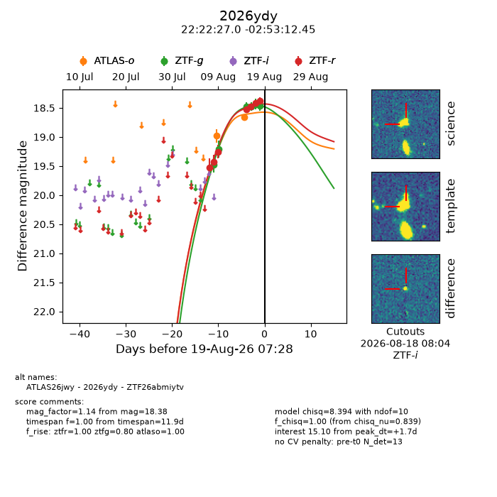
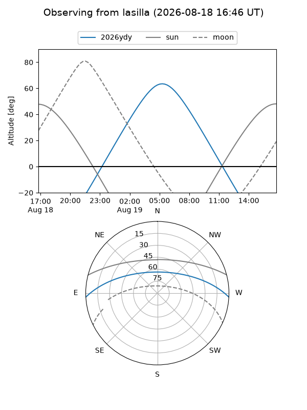
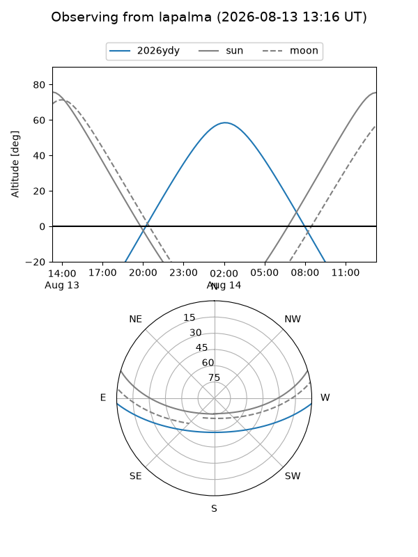
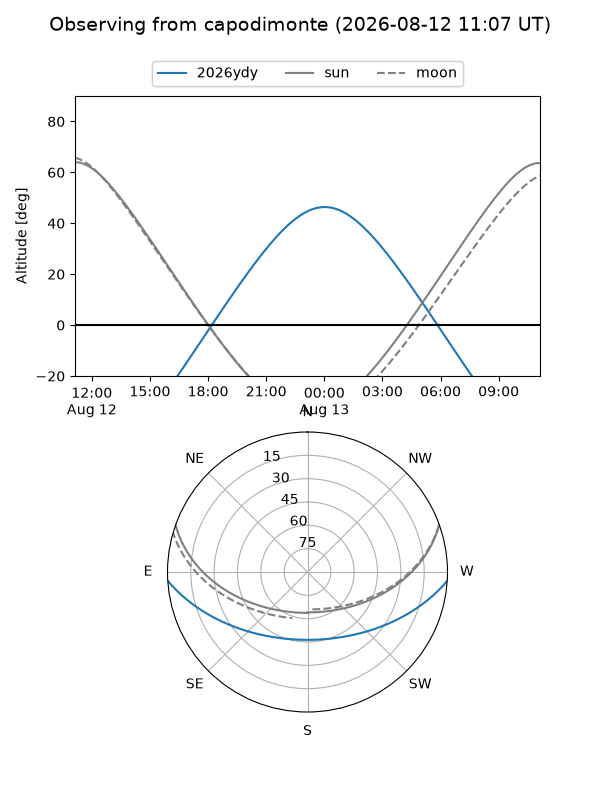
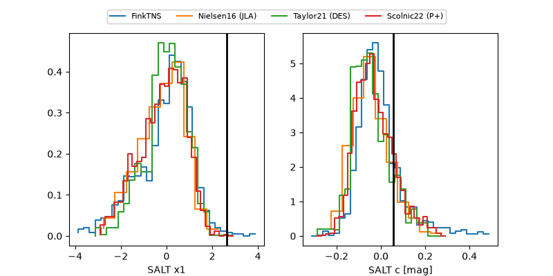

2026ydy
Target 2026ydy at 2026-08-19 07:31
Aliases and brokers:
FINK-ZTF: ztf.fink-portal.org/ZTF26abmiytv
Lasair-ZTF: lasair-ztf.lsst.ac.uk/objects/ZTF26abmiytv
ALeRCE-ZTF: alerce.online/object/ZTF26abmiytv
YSE-PZ: ziggy.ucolick.org/yse/transient_detail/2026ydy
TNS name: wis-tns.org/object/2026ydy
Direct TNS query: direct search
alt names
ZTF26abmiytv (ztf,fink_ztf)
2026ydy (tns,yse)
ATLAS26jwy (atlas)
Coordinates:
equatorial (ra, dec) = 335.6125,-2.88679
equatorial (HMS+DMS) = 22:22:26.99,-02:53:12.45
galactic (l, b) = (60.6568,-46.93051)
Flags:
TNS type: nan
peak dt: +1.7
Photometry:
last atlaso=18.66, ztfg=18.46, ztfr=18.38
2 atlaso, 6 ztfg, 7 ztfr detections
Lightcurve

Visibility



Additional plots
